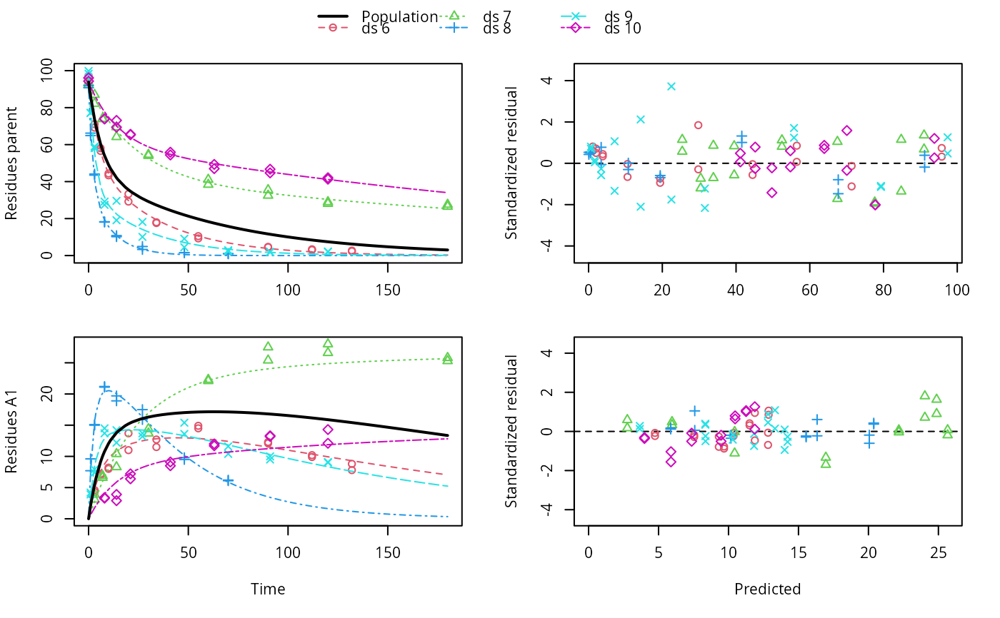

Plot predictions from a fitted nonlinear mixed model obtained via an mmkin row object
Source:R/plot.mixed.mmkin.R
plot.mixed.mmkin.RdPlot predictions from a fitted nonlinear mixed model obtained via an mmkin row object
# S3 method for mixed.mmkin plot( x, i = 1:ncol(x$mmkin), obs_vars = names(x$mkinmod$map), standardized = TRUE, xlab = "Time", xlim = range(x$data$time), resplot = c("predicted", "time"), pred_over = NULL, test_log_parms = FALSE, conf.level = 0.6, ymax = "auto", maxabs = "auto", ncol.legend = ifelse(length(i) <= 3, length(i) + 1, ifelse(length(i) <= 8, 3, 4)), nrow.legend = ceiling((length(i) + 1)/ncol.legend), rel.height.legend = 0.02 + 0.07 * nrow.legend, rel.height.bottom = 1.1, pch_ds = 1:length(i), col_ds = pch_ds + 1, lty_ds = col_ds, frame = TRUE, ... )
Arguments
| x | An object of class mixed.mmkin, saem.mmkin or nlme.mmkin |
|---|---|
| i | A numeric index to select datasets for which to plot the individual predictions, in case plots get too large |
| obs_vars | A character vector of names of the observed variables for which the data and the model should be plotted. Defauls to all observed variables in the model. |
| standardized | Should the residuals be standardized? Only takes effect if
|
| xlab | Label for the x axis. |
| xlim | Plot range in x direction. |
| resplot | Should the residuals plotted against time or against predicted values? |
| pred_over | Named list of alternative predictions as obtained from mkinpredict with a compatible mkinmod. |
| test_log_parms | Passed to mean_degparms in the case of an mixed.mmkin object |
| conf.level | Passed to mean_degparms in the case of an mixed.mmkin object |
| ymax | Vector of maximum y axis values |
| maxabs | Maximum absolute value of the residuals. This is used for the scaling of the y axis and defaults to "auto". |
| ncol.legend | Number of columns to use in the legend |
| nrow.legend | Number of rows to use in the legend |
| rel.height.legend | The relative height of the legend shown on top |
| rel.height.bottom | The relative height of the bottom plot row |
| pch_ds | Symbols to be used for plotting the data. |
| col_ds | Colors used for plotting the observed data and the corresponding model prediction lines for the different datasets. |
| lty_ds | Line types to be used for the model predictions. |
| frame | Should a frame be drawn around the plots? |
| ... | Further arguments passed to |
Value
The function is called for its side effect.
Author
Johannes Ranke
Examples
ds <- lapply(experimental_data_for_UBA_2019[6:10], function(x) x$data[c("name", "time", "value")]) names(ds) <- paste0("ds ", 6:10) dfop_sfo <- mkinmod(parent = mkinsub("DFOP", "A1"), A1 = mkinsub("SFO"), quiet = TRUE) # \dontrun{ f <- mmkin(list("DFOP-SFO" = dfop_sfo), ds, quiet = TRUE) plot(f[, 3:4], standardized = TRUE)# For this fit we need to increase pnlsMaxiter, and we increase the # tolerance in order to speed up the fit for this example evaluation # It still takes 20 seconds to run f_nlme <- nlme(f, control = list(pnlsMaxIter = 120, tolerance = 1e-3)) plot(f_nlme)#> Running main SAEM algorithm #> [1] "Fri Jun 11 10:56:37 2021" #> .... #> Minimisation finished #> [1] "Fri Jun 11 10:56:44 2021"f_obs <- mmkin(list("DFOP-SFO" = dfop_sfo), ds, quiet = TRUE, error_model = "obs") f_nlmix <- nlmix(f_obs)#> Error in nlmix(f_obs): could not find function "nlmix"#> Error in plot(f_nlmix): object 'f_nlmix' not found# We can overlay the two variants if we generate predictions pred_nlme <- mkinpredict(dfop_sfo, f_nlme$bparms.optim[-1], c(parent = f_nlme$bparms.optim[[1]], A1 = 0), seq(0, 180, by = 0.2)) plot(f_saem, pred_over = list(nlme = pred_nlme))# }